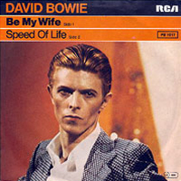

1977 - LOW
Though unusually low-concept - as far as David Bowie album covers go - another still from The Man Who Fell To Earth provided the Low artwork with a visual pun - and a gloriously futuristic burnt-orange colouring. Having relocated from Los Angeles to Europe - first travelling to France, before settling in Berlin - Bowie embarked on a series of albums with Brian Eno, known as the "Berlin Trilogy", recorded in relative anonymity in Berlin's Hansa Tonstudio. The profile image of Bowie as Thomas Jerome Newton completed the pun: "low profile".
Photographer: Steve Schapiro
SPEED OF LIFE
(Instrumental)
BREAKING GLASS
Baby, I've been
Breaking glass
In your room again
Listen
Don't look at the carpet
I drew something awful on it
See
You're such a wonderful person
But you got problems oh-oh-oh-oh
I'll never touch you
WHAT IN THE WORLD
You're just a little girl with grey eyes
Never mind, say something
Wait until the crowd cries
Oh, wait until the crowd cries
You're just a little girl with grey eyes
So deep in your room
You never leave your room
Something deep inside of me
Yearning deep inside of me
Talking through the gloom
What in the world can you do?
What in the world can you do?
I'm in the mood for your love
For your love
For your love
For your love
I'm just a little bit afraid of you
'Cause love won't make you cry
But, wait until the crowd goes
Oh, wait until the crowd goes
I'm just a little bit afraid of you
So deep in your room
You never leave your room
Something deep inside of me
Yearning deep inside of me
Is talking through the gloom
What in the world can I do?
What in the world can I do?
I'm in the mood for your love
For your love
For your love
Oh, what you gonna say?
Oh, what you gonna do?
Ah, what you gonna be?
To the real me
To the real me
SOUND AND VISION
Don't you wonder sometimes
'Bout sound and vision?
Blue, blue, electric blue
That's the colour of my room
Where I will live
Blue, blue
Pale blinds drawn all day
Nothing to read, nothing to say
Blue, blue
I will sit right down
Waiting for the gift of sound and vision
And I will sing
Waiting for the gift of sound and vision
Drifting into my solitude
Over my head
Don't you wonder sometimes
'Bout sound and vision?
ALWAYS CRASHING IN THE SAME CAR
Every chance
Every chance that I take
I take it on the road
Those kilometers and the red lights
I was always looking left and right
Oh, but I'm always crashing
In the same car
Jasmine, I saw you peeping
As I pushed my foot down to the floor
I was going round and round the hotel garage
Must have been touching close to 94
Oh, but I'm always crashing
In the same car
BE MY WIFE
Sometimes you get so lonely
Sometimes you get nowhere
I've lived all over the world
I've left every place
Please be mine
Share my life
Stay with me
Be my wife
Sometimes you get so lonely
Sometimes you get nowhere
I've lived all over the world
I've left every place
Please be mine
Share my life
Stay with me
Be my wife
Sometimes you get so lonely
A NEW CAREER IN A NEW TOWN
(Instrumental)
WARSZAWA
Mmmm-mm-mm-ommm
Sula vie dilejo
Mmmm-mm-mm-ommm
Sula vie milejo
Mmm-omm
Cheli venco deho
Cheli venco deho
Malio
Mmmm-mm-mm-ommm
Helibo seyoman
Cheli venco raero
Malio
Malio
ART DECADE
(Instrumental)
WEEPING WALL
(Instrumental)
SUBTERRANEANS
Share bride failing star
Care-line, care-line
Care-line, care-line riding me
Shirley, Shirley, Shirley, own
Share bride failing star
SINGLES
